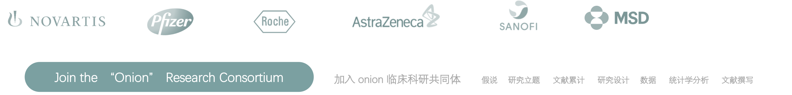

>
我的案例
案例管理页面
Home Page 主页/首页
My Account 我的信息
My Onion 我的研究
My Guideline 我搜索的指南
My Accumulation 我的文献积累
My Deleted 我的删除
更多帮助
退出登录

Case #0001
Module 1
建立什么研究课题
Phase 1: 回顾指南、共识，帮助您建立科研课题
Phase 2：检索文献，如何积累总结是关键
Phase 3：提出假说，规范书写您的研究课题（PICOST）
Module 2
怎样的研究设计适合我的临床实践
Phase 1: 辅助您确定研究目的 & 研究类型
Phase 2：构建研究中最核心的框架（framework）
FrameWork
Module 3
建立我的研究方案
跟着走，将研究框架完善成为“高规范的研究方案”
Planning
Module 4
研究数据预试验｜数据处理
先进的临床研究数据处理，帮助您完成“预试验”
Module 5
撰写我的研究文献
“跟着走”，撰写高质量的研究报告（文献）
article